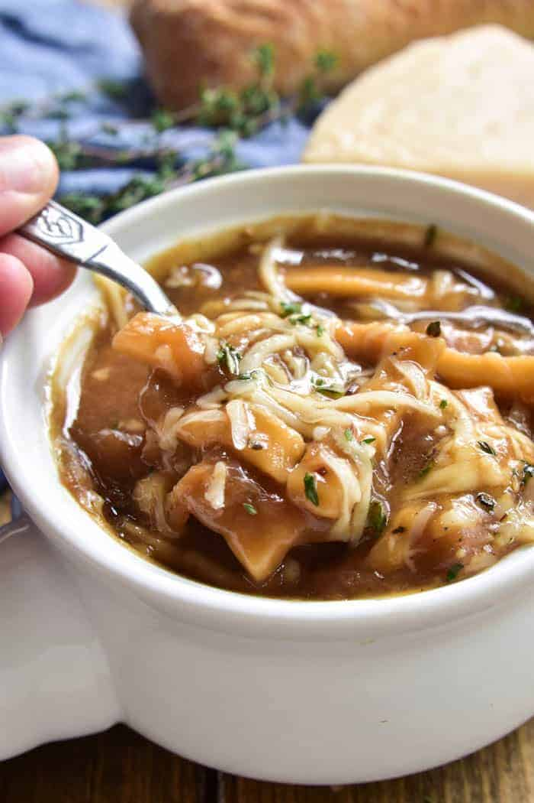

French Onion Noodle Soup

Preparation Time: 1hr
Ingredients Required:
- 1/2 cup butter, salted
- 4 sweet onions, thinly sliced
- 8 cups beef broth
- 1/4 cup cooking sherry
- 1-2 Tbsp. granulated sugar (optional)
- 2 Tbsp. all purpose flour
- 2 1/2 tsp. salt
- 2 tsp. worcestershire sauce
- 2 bay leaves, dried
- 2 sprigs fresh thyme
- 1 bag egg noodles, 200g
- 1/2 teaspoon coarsely ground pepper
- 8 oz. swiss or gruyere cheese, shredded
Instructions:
- Melt butter in a large soup pot over medium heat.
- Melt butter in a large soup pot over medium heat.
-
Add in beef broth, cooking sherry, sugar, flour, salt, and
worcestershire sauce. Whisk until smooth.
- Add bay leaves, thyme sprigs, and Reames Frozen Egg Noodles.
-
Bring soup to a boil; reduce heat and simmer 30 minutes or until
noodles are fully cooked.
-
Top with shredded cheese; garnish with fresh thyme and ground pepper.